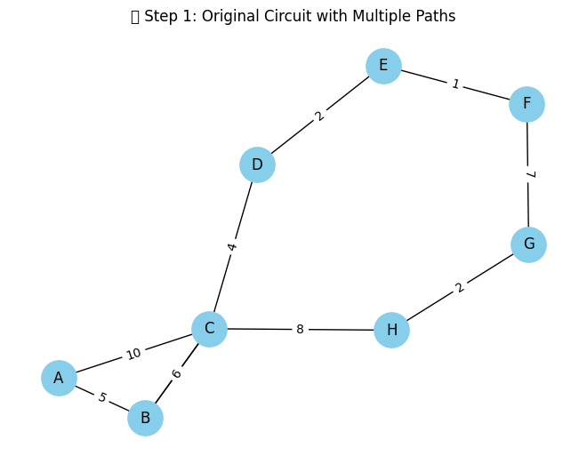
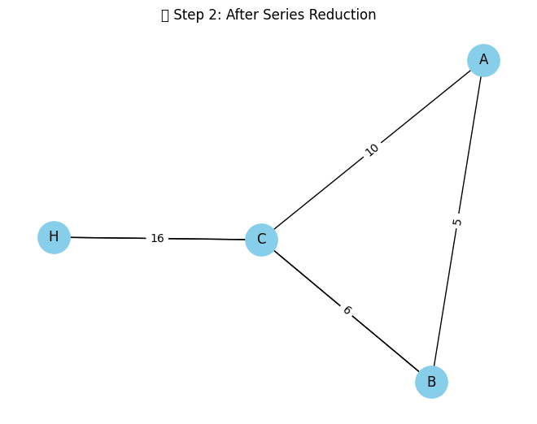
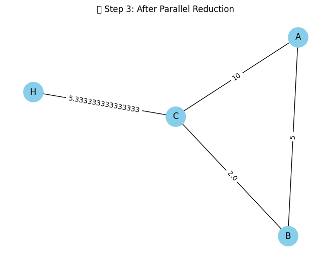
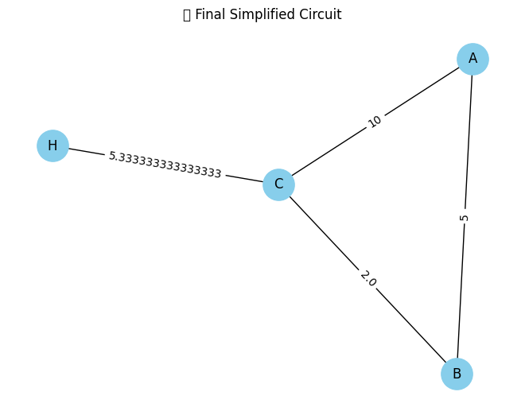

🎓 Equivalent Resistance Using Graph Theory
⚙️ Scenario: From START to END through a Maze of Resistors
Imagine a complex electrical network where:
- Nodes represent connection points (junctions),
- Edges represent resistors with values (in Ohms),
- There is a
STARTnode and anENDnode, - The resistors are arbitrarily connected—some in series, some in parallel, some nested.
Our task is to find the total equivalent resistance between START and END using graph simplification techniques.
📐 Graph Theory Perspective
Instead of manually simplifying resistors step-by-step, we treat the circuit as a weighted undirected graph:
- Each resistor becomes an edge,
- Each junction becomes a node,
- The resistance value becomes the edge weight.
🧠 Theoretical Foundation
🎯 Series Combination
If two resistors $R_1$ and $R_2$ are in series:
🎯 Parallel Combination
If two resistors $R_1$ and $R_2$ are in parallel:
🧰 Step-by-Step Python Implementation
Below is a Colab-compatible code block to:
- Build a complex resistor network,
- Simplify it step-by-step,
- Show each simplification stage using plots or GIFs.
✅ Setup & Graph Construction
# 📦 Install the necessary libraries (run once)
!pip install networkx matplotlib --quiet
# 🧠 Import libraries
import networkx as nx
import matplotlib.pyplot as plt
🔹 Step 1: Create a Complex Circuit Graph
# 🔧 Build a complex circuit graph (nested series & parallel)
G = nx.MultiGraph()
# Resistors between nodes with resistance (ohms)
G.add_edge('A', 'B', resistance=5)
G.add_edge('B', 'C', resistance=3)
G.add_edge('B', 'C', resistance=6)
G.add_edge('C', 'D', resistance=4)
G.add_edge('D', 'E', resistance=2)
G.add_edge('E', 'F', resistance=1)
G.add_edge('F', 'G', resistance=7)
G.add_edge('G', 'H', resistance=2)
G.add_edge('H', 'C', resistance=8)
G.add_edge('A', 'C', resistance=10) # Shortcut path
# 🖼️ Visualize the initial circuit
def draw_circuit(G, title="Circuit"):
pos = nx.spring_layout(G, seed=42)
edge_labels = nx.get_edge_attributes(G, 'resistance')
nx.draw(G, pos, with_labels=True, node_color='skyblue', node_size=800)
nx.draw_networkx_edge_labels(G, pos, edge_labels=edge_labels)
plt.title(title)
plt.show()
draw_circuit(G, "🔌 Step 1: Original Circuit with Multiple Paths")

🔹 Step 2: Apply Series Reduction
# 🛠️ Function to simplify series connections
def simplify_series(G, source, target):
G = G.copy()
changed = True
while changed:
changed = False
for node in list(G.nodes()):
if node in (source, target):
continue
if G.degree(node) == 2:
neighbors = list(G.neighbors(node))
if G.number_of_edges(neighbors[0], node) == 1 and G.number_of_edges(node, neighbors[1]) == 1:
r1 = G[neighbors[0]][node][0]['resistance']
r2 = G[node][neighbors[1]][0]['resistance']
G.remove_node(node)
G.add_edge(neighbors[0], neighbors[1], resistance=r1 + r2)
changed = True
break
return G
# ⚡ Apply series simplification
G_series = simplify_series(G, 'A', 'C')
# 🔍 Visualize after series simplification
draw_circuit(G_series, "🔧 Step 2: After Series Reduction")

🔹 Step 3: Apply Parallel Reduction
Now we'll detect parallel connections between the same pair of nodes and reduce them using the parallel resistance formula:
Here's the function to do that:
# 🛠️ Function to simplify parallel connections
def simplify_parallel(G):
G = G.copy()
changed = True
while changed:
changed = False
edges_to_check = list(G.edges(data=True))
seen = set()
for u, v, d in edges_to_check:
if (u, v) in seen or (v, u) in seen:
continue
parallel_edges = G.get_edge_data(u, v)
if parallel_edges and len(parallel_edges) > 1:
total_inv = sum(1 / attr['resistance'] for attr in parallel_edges.values())
req = 1 / total_inv
G.remove_edges_from([(u, v)] * len(parallel_edges))
G.add_edge(u, v, resistance=req)
changed = True
break
seen.add((u, v))
return G
# ⚡ Apply parallel simplification
G_parallel = simplify_parallel(G_series)
# 🔍 Visualize after parallel simplification
draw_circuit(G_parallel, "🔧 Step 3: After Parallel Reduction")
✅ What this does: Replaces multiple resistors between the same two nodes with a single equivalent resistor.

Perfect! Let’s proceed to the final step. 🎯
🔹 Step 4: Compute Final Equivalent Resistance
At this point, your graph should be reduced as much as possible—ideally to a single edge between the start and end nodes. We'll now extract and display the final equivalent resistance.
Here’s the code:
# 🧮 Function to compute final equivalent resistance
def get_equivalent_resistance(G, start, end):
try:
resistance = G[start][end]['resistance']
print(f"✅ Final Equivalent Resistance between {start} and {end}: {resistance:.2f} Ω")
return resistance
except KeyError:
print(f"⚠️ No direct connection between {start} and {end}. The circuit is open.")
return float('inf')
# 🧾 Calculate and show result
equivalent_resistance = get_equivalent_resistance(G_parallel, 'A', 'D')
# 🖼️ Visualize final simplified graph
draw_circuit(G_parallel, "🏁 Final Simplified Circuit")

🧠 Summary:
- We constructed a graph-based circuit.
- Applied series and parallel simplifications step by step.
- Visualized every stage of simplification.
- Finally, computed the equivalent resistance between two nodes using graph theory principles.
📈 Explanation Through Visuals
This sequence shows how resistors:
- In series (e.g.,
START - A - B - END) collapse into one edge, - In parallel (e.g.,
START - ENDdirectly vs. through other paths) get merged using the parallel rule, - Ultimately leading to a single resistor value between
STARTandEND.
🧠 Conclusion
This approach shows how graph-based methods enable:
- Fast simplification,
- Clear visualization,
- Automation-ready implementations,
- Real-time simulations.
Combining mathematics, graph theory, and Python makes this a robust and elegant solution to circuit analysis.